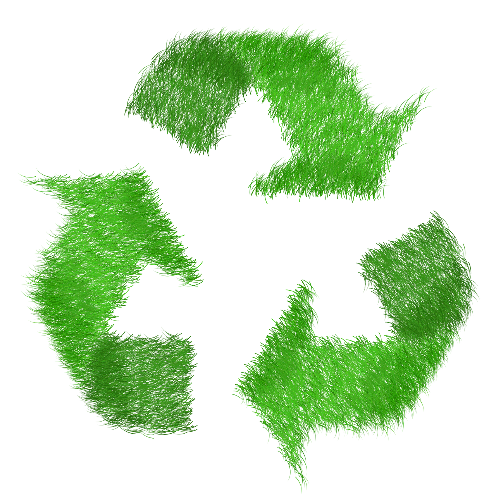
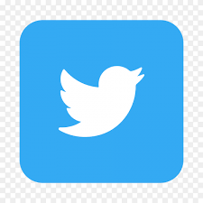

Tukar sampah jadi poin tabungan yang bisa ditukar kebutuhan sehari-hari seperti sembako, pulsa, atau alat tulis.
Pelatihan dan workshop untuk masyarakat tentang cara memilah, mengelola, dan mendaur ulang sampah secara mandiri.
Layanan penjemputan sampah terjadwal langsung ke rumah anggota, memudahkan proses partisipasi.
Program bersama sekolah, RT/RW, dan UMKM untuk membangun budaya bersih dan berkelanjutan.